Simple
IDE User Guide
Copyright © 2012 John Steven Denson
The Simple IDE is designed for programming
the Parallax Propeller.
This guide is not comprehensive. It
describes using basic features.
Table of Contents
Starting the IDE the first
time
Selecting Board Type and
Serial Port
Option 2: Close All, start
new.
SimpleIDE SDLOAD and SDXMMC
Attributes
Simple
IDE Features
·
Menu Bar with File, Project, Edit, Tools, Debug, and Help
·
Tool Bar with most Menu Bar operations
·
Project manager menu and area for project file settings
·
Compiler area for setting build attributes
·
Tabbed text editor
·
Editor highlighting
·
Source Browser finds declarations
·
Project build status pane
·
Build Status shows build progress
·
Status bar shows compile size, brief messages, and progress bar
·
Board type and COM port selector
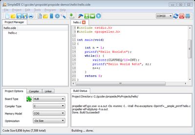
Installing
SimpleIDE
SimpleIDE is
distributed as a Windows InnoIDE install package, a Mac OSX zip (.zip), Linux
i686, Debian x86_64, Fedora x86_64, and is available as open source to compile
with Qt 4.8 and GCC.
Windows
Installer
The windows installer is about 76MB and contains
the Propeller-GCC tool-chain, Simple IDE, and Propeller Demo
programs installed in the user's selected work-space. The installer will
ask the user for directories and other info for setup. The installer makes the
package usable in one simple process.
A properties dialog will open the first time, and
the Compiler tab should always have the correct information for windows. Just
click OK to get started.
Mac OSX
The SimpleIDE.zip is about 60MB and contains the
Propeller-GCC tool-chain, Simple IDE, and Propeller Demo programs in the
file. Use finder to unpack the contents of the .zip to your folder. Once the
.zip is unpacked, click on the app icon to start SimpleIDE.
A properties dialog may open the first time, and
the Compiler tab should always have the correct information except for the
user workspace.
Linux
Packaging
Linux packages are primitive at the moment and will
be changed to use the typical packager tools for the platform. The current package
includes a setup script and supporting shared libraries. If you are items
missing from the system required by SimpleIDE you can use the ldd tool to find
out what you need, I.E. $ ldd SimpleIDE
This Linux SimpleIDE package contains only the
SimpleIDE. It does not contain the Propeller-GCC tool-chain. Debian
packages are known to work on Ubuntu.
In the instruction below SimpleIDE-packagename.bz2
refers to the package such as SimpleIDE-0-6-2-i686-linux.bz2 . SimpleIDE-version
refers to the SimpleIDE version such as SimpleIDE-0-6-2
1. Download and install Propeller-GCC to
/opt/parallax
2. Unpack SimpleIDE with $ tar -xjf SimpleIDE-packagename.bz2
3. Change directory $ cd SimpleIDE-version.
4. Setup with $ ./setup.sh
5. Run with $ ./simpleide
6. In SimpleIDE Compiler Properties:
a. Choose the compiler from /opt/parallax/bin
b. Choose the loader path as /opt/parallax/propellerl-load
c. Choose a workspace for new projects.
7. Open the hello demo from SimpleIDE-version/demos/hello/hello.side
Starting
the IDE the first time
Start-up
"About" Splash
At first startup the SimpleIDE "About"
window appears. This shows you the current version which can be greater than
the one shown below, a link to this user guide (or web site containing it), a
check-box to choose showing or disabling the window at start-up, and an OK
button.
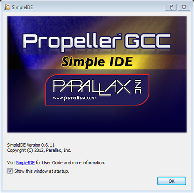
If the "Show this window at startup" is
checked, you will see this window on every startup. You can disable this
by clearing the check box.
SimpleIDE
Properties
On some O/S a dialog window titled SimpleIDE
Properties appears. It allows setting critical Folders, General
properties, and Highlights.
Folders
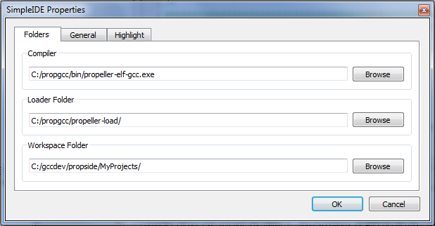
In most cases, the Folders tab will already have
the fields properly set. The back-slash '\' folder separators used in windows
are replace by '/' in the IDE. Please take note of the fields and click OK when
ready. The Compiler and Loader Folder must be set correctly before you can move
to the next step. You should choose a work-space if one is not already set. You
can skip to Preparing the Hello Demo when the folders are
properly set.
All of these properties may be changed when
the IDE is running to allow using another compiler directory by clicking
the tool-bar wrench. If you click OK to save/close the window and it comes back,
that means that the critical "Compiler" or "Loader Folder"
information is not correctly set. In most cases this will not be a problem, but
if it is you can use the Browse buttons to find the propeller-elf-gcc compiler
program and propeller-load folder.
General
Settings
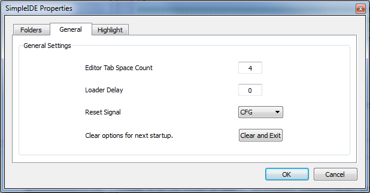
Some general property details may need to be
changed for different boards. For example, some USB serial devices do not have
DTR for controlling Propeller reset and should use RTS instead. You can change the
Reset Signal from DTR to RTS if necessary. in the properties
"General" tab. This can be changed at any time.
Syntax
Highlighting
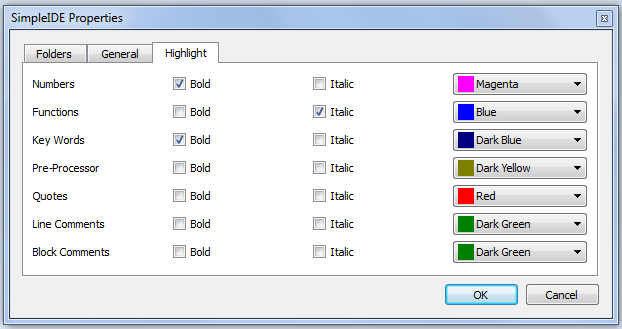
The Highlight properties tab can be used to change
editor syntax colors. At this time only a select set of system colors is
available.
Open the SimpleIDE Properties window any time
by clicking the toolbar wrench button.
The SimpleIDE Properties dialog window controls are
the same regardless of user's Operating Systems.
Hello
World Demo
Traditionally, a "hello" demo is the first
program to run with a tool set. A hello program is included in the demo
package, and that will be the first program to compile, load, and run. Later we
will use a blinker program to show starting a new project.
SimpleIDE uses a separate loader and terminal
program. The hello program run with SimpleIDE demonstrates a weakness in this
arrangement. That is, the program must delay printing otherwise the output can
be lost in transition.
A minimum hello program used in SimpleIDE will look
like this.
[code]
#include <stdio.h>
#include <propeller.h>
int main(void)
{
/* one second delay before printf */
waitcnt(CLKFREQ+CNT);
/* traditional hello message */
printf("hello, world\n");
return 0;
}
[/code]
The demo code included in the package runs a loop
and prints the loop iteration.
Before running anything on Propeller, there are a
few simple things to do. That is, you need to configure a board type and a
serial port.
Preparing
the Serial Port
TBD: installing the FTDI VCP serial port driver
....
Selecting
Board Type and Serial Port
To run the Hello demo, you must have a
Propeller board connected, a suitable board type selected, and the
right COM port selected. The COM port will only appear if the Propeller board
is connected.
The picture below shows the location of the board
type and serial port selectors. In this case the board is set to HUB, and
serial port set to COM20.
The board type is part of the project manager side
bar because it is saved per project. In this case board type HUB is used for
the "hello.side" project. The serial port is not saved in
the project because it is more of a general setting.

The Hello demo should be run with a simple board
type like HUB like shown above.
If you see the ASC board type, it will be good
enough for most 5MHz Propeller board tests. Browse the board types and see what
else is available. There is practically no difference between HUB and ASC for
simple programs like hello. Some boards have a different clock type.
The HYDRA and SPINSTAMP are a good examples that use a 10MHz
crystal.
If you start the SimpleIDE without a serial port
device connected, the COM port (here shown as COM6) will be blank. If the port
is blank, connect your USB port Propeller board to your computer and click
the rescan button.
The rescan button looks like this: 
Some computers have serial ports like
BlueTooth. BlueTooth serial port programming is possible, but not recommended
at this point.
Place the mouse cursor over the port name for
"hover help". Make sure hover help shows the port type such as
"USB Serial ..." or "FT232 ..." and select a different port
if necessary. If a port is not found, connect a Propeller board and refresh.
SimpleIDE does not automatically detect and use the
Propeller port at this time. It is up to the user to specify the port.
Running
the Hello Demo
1. Open the hello.side project using
Menu->Project->Open Project or the tool button.
2. Use Menu->Run Console F8 or
click the blue play button: 
Run Console compiles, loads, and runs the program.
The serial console will appear after loading.
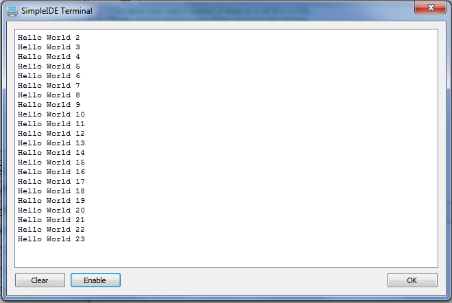
Note that the terminal is not fast enough to catch the
first few hello lines. This is because of the transition from propeller-load
loading the program, releasing the serial port, and starting the terminal.
Other notes about the SimpleIDE Terminal worth
mentioning: If you press OK or close the window, the terminal will close and
reset the port. If you press the Enable/Disable button, it will not close the
port - it simply stops or restarts the screen update. The clear button clears
the screen. Text can be copied from the terminal using the OS copy keyboard
command.
Special Clock Boards
If you do not have an 80MHz Propeller board, you
can make your own board type and set the clock frequency (typically crystal
frequency times PLLx mode). Assuming C:\propgcc is your installation directory:
1. Copy the C:\propgcc\propeller-load\hub.cfg to
propgcc\propeller-load\yourboard.cfg
2. Change clock frequency in yourboard.cfg, and
save the file.
3. Click the Jigsaw puzzle piece button in the
Project Option control to reload the board types.
4. Choose YOURBOARD from the board type combobox.
Note RCFAST and RCSLOW board types are available in
the board types, but these should not be picked for programs using the serial
port console.
Creating
a new project
There are two ways to start a new project:
Option
1: New Project
1. Choose Menu->Project->New Project or click
the New Project button.
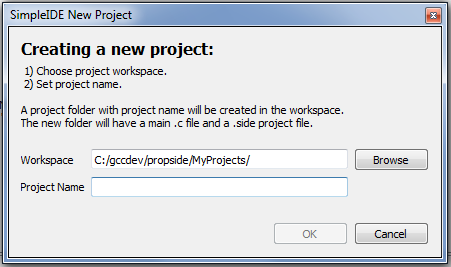
2. Click the folder browse button to select a new folder.
3. Enter your project name. The name will be added
to the folder path. When you have a valid project name and path, the OK button
will be enabled. You can't start a new project in an existing folder.
When you press OK to finish the New Project dialog
the folder/project name will be created. A main program template will be added
for your new project.
Option
2: Close All, start new.
1. Choose Menu->File->Close all to close all
editors and the project.
2. Fill in new main program with code below (please
do not copy/paste the [code] tags).
3. Choose Menu->File->Save As to rename the
"untitled" editor tab to "blinker.c".
4. Choose Menu->Project->Set Project
5. Select Memory Model LMM or COG from the project
options.
Example
Code
[code]
#include <propeller.h>
int main(int argc, char* argv[])
{
int mask = 0x3fffffff;
DIRA = mask;
for(;;) {
OUTA ^= DIRA;
waitcnt(CLKFREQ/2+CNT);
}
return 0;
}
[/code]
Using Menu->Project->Set Project will set the project name
to the editor tab file name.
Set Project saves the project properties to the
current state.
Click the hammer button to build your program after
setting up your project.
There should be no warnings or errors. If you see a
warning or error, click on that line in the build output and it will take you
to the problem area in the editor in most cases. Check your code for
typos.
If you did copy/paste the [code] tags for example
you might see the message below. Click the error message and remove the line
from the editor panel.
blink.c:1:1: error: expected
identifier or '(' before '[' token
Once any errors are resolved you should be able to
download and run the blinker.c example with Run (F10)
If you want to store the program permanently you can
use Burn EE (F11)
IDE
Controls
Many of the features of the IDE will be familiar to
new users. Some features need a little explanation.
File
Menu
·
New: Creates a new file
called "untitled" in the tabbed editor space.
·
Open: Opens an existing
file in the tabbed editor space.
·
 Save: Saves the tab editor
text to the filename in shown on the tab.
Save: Saves the tab editor
text to the filename in shown on the tab.
·
Save As: Saves the current
tabbed editor text to another filename.
·
Close: Closes the currently
visible tabbed editor.
·
Close
All: Closes all files and projects.
·
Print: Prints the current
document to a selected printing device.
·
Previous
file names: Lists the last 5 opened files.
·
Exit: Asks to save any
unsaved files and exits the program.
Project
Menu
·
New Project: Opens a dialog
for creating a new project in "folder/name" selected by user. Project
name will be added to the folder by the program from the user's project name.
If the folder/name does not exist, it is created.
·
Open Project: Opens an
existing project file with extention .side
·
 Save and Close Project:
projects are always saved before they are closed.
Save and Close Project:
projects are always saved before they are closed.
·
Set Project. The function
of the set project button (F4 or Project->Set Project) has been discussed in
the example above. Please review that section if you haven't already.
·
Previous
project names: Lists the last 5 opened projects.
·
Properties. This will open
the SimpleIDE properties menu which was discussed in the first time use
section.
Edit
Menu
·
 Copy: Copies selected
editor text to the clip-board.
Copy: Copies selected
editor text to the clip-board.
·
Cut: Copies selected editor
text to the clip-board and deletes text.
·
Paste: Pastes text from
clipboard to the editor at cursor.
·
Find and Replace: Opens a
dialog with find and replace tools that allows for optional whole word and case
sensitive find and replace.
·
Redo: Undoes the last undo.
·
 Undo: Reverses the last
edit.
Undo: Reverses the last
edit.
Find and Replace
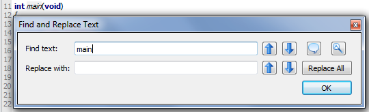
The
Find and Replace dialog window allows searching and replacing text in the
editor.
·
Find
text: when a word is entered in this field, the tool will try to find it in the
editor. To find more instances of the word, press the previous or next buttons.
·
Replace
with: when a word is entered in this field, it will be used to replace the find
word when the replace previous or next button is clicked. The Replace All
button will replace all instances of the find word with the replace word in the
current editor.
·
Previous: finds or replaces the
previous word depending on the row of the button.
·
Next: finds or
replaces the next word depending on the row of the button.
·
 Whole Word: find only whole
words.
Whole Word: find only whole
words.
·
Case Sensitive: find only
words that match the case of the find text.
Tools
Menu
·
Send File to Target SD Card:
If the board-type has SDLOAD or SDXMMC in the name, this button can be used to
send any file to the SD Card. Typically clicking this button will also compile
the project to an AUTORUN.PEX image that can be used when Propeller boots up.
·
Go Back: When not greyed,
this button will let you browse back from Browse Declaration.
·
Browse Declaration: Allows
zooming to a user defined function or global variable declaration. Library
functions such as printf that are not in the project file-list cant be
browsed.
·
Font: Allows selecting an
editor font.
·
 Bigger Font: Increases the
editor font by %20.
Bigger Font: Increases the
editor font by %20.
·
Smaller Font: Decreases the
editor font by %20.
·
Next Tab:
Lets user scroll to the next tab in the editors.
Program
Menu
·
 Run Console
(F8): Build, load, and run program on Propeller RAM (or external memory for
XMM). It opens a serial port console terminal window.
Run Console
(F8): Build, load, and run program on Propeller RAM (or external memory for
XMM). It opens a serial port console terminal window.
·
Build (F9):
Build program only.
·
Burn F11):
Build and load program to Propeller EEPROM (and external flash for XMM). Board
types with SDLOAD or SDXMMC in their name will have program saved to SD card
first.
·
Run (F10):
Build, load, and run program on Propeller RAM (or external flash for XMM).
Board types with SDLOAD or SDXMMC in their name will have program saved to SD
card first.
Serial
Port Control
·
Serial Port:
This is the drop-down box on the left of the rescan button. It lets
you choose the port to use where your board is attached. The example above
shows COM20 while this bullet shows COM6 - it just demonstrates that any port
can be selected. If the mouse hovers over the control, the "hover
help" may tell you more information such as whether the port is a USB
serial port or even Bluetooth.
·
 Rescan: You
must click the rescan button every time you change physical port hardware
connections.
Rescan: You
must click the rescan button every time you change physical port hardware
connections.
·
 Port Reset:
This red power switch button lets you reset the board.
Port Reset:
This red power switch button lets you reset the board.
·
Serial Port
Console: This is a "display" button. Press to show and connect
terminal window to the selected port. If pressed (square
around the button), it is connected and you can disconnect by pressing the
button again.
Help Menu
Project Manager
SimpleIDE uses a project
manager - note the tab circled in red below. This is not a list of files based
on the open file like found in the Propeller Tool. The project manager defines
what is built regardless of what is shown in the editor tabs.
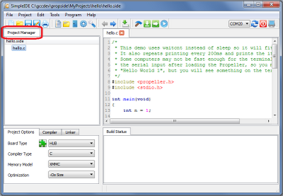
A SimpleIDE project
is called a "side project" because SIDE is an abbreviation of Simple
IDE. The ways to start a side project are described above in Creating a New
Project.
It may be obvious
to some, but it is still worth stating that a project consists of several
files. If files are not listed in the project, the project cantt be built and
run. Some .h header files may not be listed, but they must exist in the project
folder pr a specified link for successful builds.
The minimum
required file in the side project is the main .c file. For example, the
hello.side project must contain a file called hello.c as shown above. The
hello.c file must contain the "main" function, that is: int
main(void) or some variation of that. Any other files containing code being
used by hello.c must be listed in the side project.
Please note, that
there is no issue using a main .c type file for projects that include C++ in
Propeller-GCC.
Project
File Types
Source
Files
These files can be added to the project manager by
right clicking an existing project file and using the popup menu.
·
C files (*.c
*.cc *.cpp) typically contain function or class method implementations.
·
COG C
files (*.cogc) is a special type of C file that will compile to an image that
will run in a COG.
·
SPIN
files (*.spin) contain PASM that can be compiled and extracted for starting in
a COG.
·
GAS files
(*.s *.S) contain PASM like GNU Assembly that can be compiled and
extracted for starting in a COG.
Include
Files
These files also known as header files typically
contain interface information.
·
Header
files (*.h) are used to define data types and declare functions that may be in
libraries.
·
Header
files are included in C source and do not need to be added to the project
manager.
·
Sometimes
we need to specify an include path for the files.
o
An
include path can be added with "-I folder" in the Other Compiler
Options box
o
An
include path can be added using the project manager popup menu.
Object
Files
These files are generated by the build process and
are not added to the project manager.
·
Object
files (*.o): object files are always generated by the compiler.
·
COG
Object file (*.cog): this is a generated object file created from a .cogc file.
·
Dat files
(*.dat): this type of file is generated by BSTC or other Spin programs used for
making PASM COG code.
Project
File List
The project pane is
blank if no project is set. If a project is set, the project name with .side
will be displayed as in the hello.side example above. All projects are .side
projects. The first indented entry is the main program. It should have the main
start-up function as in the case of hello.c .
Often we want to
have more than one file per project. The project manager lets us add files,
links to files, and paths for extra includes and libraries.
If you right-click
on the hello.c file entry in the project file list (or any other entry in the
list), you will get a popup menu that gives you several options. Most menu
items are related to adding entries like files or links. The function of each
popup menu item is described below.
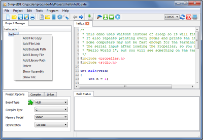
If you just want to
see the contents of a file, left click on the file-name. The file will open in
the editor tabs if the entry is a file. Entries starting with -I and -L are
path specifiers, not files. Clicking the .side file does nothing.
·
Add
File Copy: Add a new file to
the project. When you add a file to the project, it must already exist somewhere
on your computer. You can make a new file in the editor and save-as for
example. If you choose a file outside of the project directory, the file will
be copied to the directory. File names are added in alphabetical order except
the main project file.
·
Add
File Link: Add a link to an
existing file to the project. When you add a link to a file, the file must
already exist. When you link to a file it will not be copied to the project
directory. A link will have the short file name and -> full path name as shown
above.
·
Add
Include Path: Add an include path
for .h header files not in the project folder or tool-chain library folder.
This adds a -I path to the project.
·
Add
Library File: Add a library
file to the project. Add only .a library file(s) to the project. Files will not
be copied to the folder.
·
Add
Library Path: Add a library path
for .a library files not in the project folder or tool-chain library
folder. This adds a -L path to the project.
·
Delete: to delete a file or link from the project,
right click on the item and choose delete. Do not delete the top file - it has
a special meaning. If you want another top file, create it and set the project.
·
Show
Assembly: right click the
file name and click Show Assembly to see the Propeller-GCC assembly.
·
Show
File: this is the same as
left click on a file name.
Project
Options
The compiler pane
lets you choose typical Propeller-GCC compile options.
These options are
automatically saved in the .side project file.
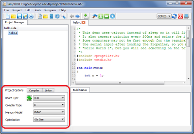
·
Board
Type: The board type
option selects the basic board type where the program will be loaded. In many
cases the board type doesn't matter for LMM or COG programs. Some boards have
non-standard system clock frequencies though and must be properly selected. In
all cases XMM type programs will need an XMM capable board selected.
·
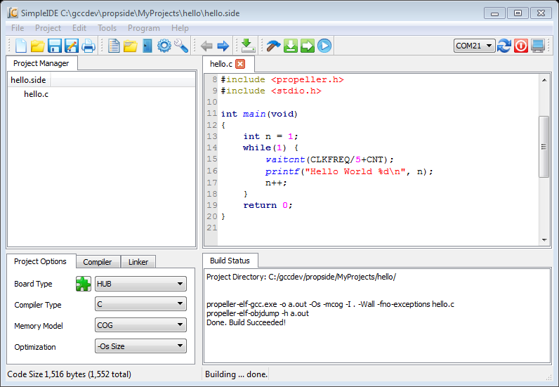 Reload Board Types: This puzzle piece button will read all
C:\propgcc\propeller-load\*.cfg files and load the names into the Board Type
combo box. The selected board type is saved in the .side project file.
·
 Board Type: This is the drop-down box on the left side of
the green puzzle piece. It lets you choose the board type to use with your
program. Board types with SDLOAD or SDXMMC are special and when selected tell
the IDE that certain functions will be performed.
Board Type: This is the drop-down box on the left side of
the green puzzle piece. It lets you choose the board type to use with your
program. Board types with SDLOAD or SDXMMC are special and when selected tell
the IDE that certain functions will be performed.
·
Compiler
Type: C compiles C
programs and can compile very simple C++ programs such as the C++_toggle demo.
C programs needing std namespace and libraries, etc... will need to use the C++
compiler. Typially a full C++ program will need an external memory to be
useful.
·
Memory
Model: Many programs use
LMM, but some programs use COG or XMMC. The C-VGA demo is a COG only program.
To compile that, use the COG memory mode. Some programs are too big for LMM and
can be run on external memory modes like XMMC. The included graphics demo can
run on LMM, but it can also run on XMMC with board type EEPROM selected (64KB
or more EEPROM should be used). XMM-SINGLE should be used for RAM based
external memory devices. XMM-SPLIT is the same as XMM and should be used where
external memory is split into code and data where code lives in Flash and data
lives in RAM XMM is originally used on boards like C3.
·
Optimization: Typically we want to optimize for size, but
there are some programs that we want to optimize for speed at the cost of a
larger program. Use -O2 for speed optimizations.
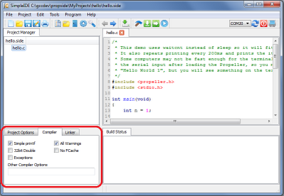
·
Simple Printf: GCC's default printf is very big
(12KB or more). Simple printf provides most of the default printf features
and is fine for most programs although it is not completely standard compliant.
Simple printf programs using integers only can be as small as about 7KB so
there is great advantage in using it on Propeller most of the time. There are
cases though when the normal printf can be slightly smaller than simple printf.
·
32bit Doubles: Use 32bit doubles for floating
point double variables. The default is 64bit doubles, and may be too big for
most LMM programs.
·
All Warnings: Tells compiler to generate all
possible warnings on issues in code that can cause trouble.
·
No Fcache: This tells compiler to not use Fast
Cache (fcache). Fcache generally improves performance but it can be disabled.
·
Exceptions: This should be enabled for C++
programs that use try/catch exceptions. Using exceptions may cause bigger
programs.
·
Other Compiler Options: This lets you add -D flags for
programs that may need them. For example the dry11 demo needs
"-DLOOP=50000" (without quotes) to compile correctly. Use that flag
for building dry11. There are other flags that can be added here when using
libraries. One may need I <path-to-library-headers> for using prebuilt
libraries.
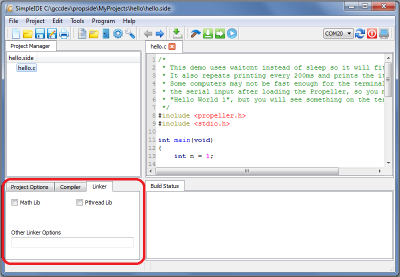
·
Math Lib: Must be checked if you are using
float or double in your program. The program will compile without this, but it will
not run correctly unless the library is included.
·
Pthread Lib: Must be checked if you are using
Pthreads for running multiple threaded programs in one COG or many COGs. The
number of threads available is limited by memory. XMM/XMMC programs will run all
threads on the main program cog. LMM programs can run M*N threads on N COGS.
·
Other Linker Options: This lets you add linker specific
options. For example -l name may be added for using a prebuilt library. One
can also add special linker scripts here if a board does not fit a built-in
memory layout.
Board
Types
SimpleIDE lets you specify your board type
from the drop-down box as mentioned above. There are many board types and
variations. Board type .cfg files contain information for the loader to use only
for starting your program. That is: the loader needs the main serial port, the
clock mode, the clock frequency, the cache driver for external memory programs,
and SD Card pin assignments. Board types do not attempt to define user devices
such as TV or VGA (TV_PIN is defined in some .cfg files, but is only used for
the loader in special cases).
Basic
Board Types
Basic
board types can work on many boards that have only a Propeller, Crystal, and EEPROM.
A Crystal is not necessary for RCSLOW and RCFAST board types. EEPROM is only
required if you want the Propeller to boot without the help of download from
your PC.
·
RCFAST: The
most common of the basic board types are RCSLOW and RCFAST. RCFAST relies on
the internal Propeller 12MHz oscillator and will boot any board. Serial port
communications with RCSLOW and RCFAST will not behave properly because both
modes are imprecise.
·
RCSLOW: RCSLOW
is like RCFAST except that it uses the slowest and most energy efficient clock
mode.
·
HUB: The HUB
board type specifies an 80MHz system clock and an external 5MHz crystal with
PLL16x clock mode. Any board that has a 5MHz crystal should work with HUB board
type. Good serial communications and TV/VGA output are possible with HUB board
type and a good 5MHz crystal. Other board types related to HUB are ASC, ASC,
QUICKSTART, and others.
·
SPINSTAMP: The
SpinStamp board type is like the HUB board type except that it relies on a
10MHz crystal to produce an 80MHz system clock by using PLL8x in the clock
mode. Any Propeller board that has a 10MHz crystal should work with the
SPINSTAMP board type. HYDRA is a related board type.
EEPROM
Board Types
The EEPROM board type is like the HUB board
type except that it has a cache driver defined for running XMMC memory model
programs. With the EEPROM or similar board types, you can load a program into
the EEPROM and the program can fetch code to run from the EEPROM device.
This mode is usable with single 32KB EEPROMs
(using two 32KB EEPROMs will not work), 64KB EEPROM, 128KB linear address space
EEPROMs (24FC1025 parts do not have a linear address space and will not work.
24LC1024 parts will work), and 256KB EEPROM from ST.
Any set of 64KB+ EEPROM can be configured to
add more code space to your program (using two 32KB EEPROMs will not work). All
devices should be the same type.
The XMMC model is the only X* memory model
that will work with EEPROM board types. Other board types related to EEPROM
that run XMMC programs are PROPBOE, QUICKSTART, and ASC+.
External
Flash Board Types
External
Flash board types like C3F and SSF will run XMMC memory model programs from
Flash memory.
·
C3F: C3F
XMMC programs are stored in the on board 1MB SPI Flash. C3F is a variant of the
C3 board type that uses all of cache for program code (the C3 type splits cache
between Flash and SRAM storage and is less efficient).
·
SSF: SSF is
the SpinSocket-Flash board type that uses 2 Winbond W25Q* QuadSPI parts for
storing and running XMMC memory model code in. This is the fastest practical
external memory solution available for propeller because of low cost (<
$0.75 per MB), low pin count (10 pins for byte-wide solution), high density (up
to 32MB), and high performance.
External
RAM Board Types
External
RAM boards are generally boards that have external SRAM, SPI-SRAM, or SDRAM.
Boards having only SRAM will only boot stand-alone it the code can be loaded
from SDCard or some other non-volatile storage. SRAM only boards can be loaded
by the PC and SimpleIDE using the serial loader protocol for testing.
·
C3: The C3
type allows using the XMM (or XMM-SPLIT) memory model store program code in SPI
Flash and data in a device like external SPI SRAM. The only default board type
that uses this model today is C3. It is possible for a cache driver to be
written for other boards that will use the XMM memory model. The C3F board type
will only use C3 Flash and only works with XMMC memory model programs.
·
DRACBLADE: This
board has SRAM and SD card. It can be loaded by the IDE for testing, but must
be programmed using SDLOAD for stand-alone boot.
·
SDRAM: This
board has SDRAM and SD card. It can be loaded by the IDE for testing, but must
be programmed using SDLOAD for stand-alone boot.
SDLOAD
Board Types
SDLOAD board types are typically RAM
board types that do not have an on board Flash. With the SDLOAD board type, the
program to be run is sent to the SDcard. The RUN, RUN Console, or BURN IDE
buttons will cause the AUTORUN.PEX output to be downloaded to SD Card and then
booted to RAM and run. Once the BURN button has been used, you can replace
AUTORUN.PEX either using the Send File to Target SD Card command/button or by
replacing the program by copying it to SDCard from your PC.
SDXMMC
Board Types
SDXMMC
board types are used to download XMMC memory model AUTORUN.PEX programs to
SDCard and run them using the RUN, RUN Console, or BURN buttons. Any board that
has an SD card can use SDXMMC.
SimpleIDE
SDLOAD and SDXMMC Attributes
How
does a board type include SDXMMC or SDLOAD attributes? This is added to the
.cfg file for a board. If a board has an SD Card, the SDXMMC option
can be added to the .cfg file with the line "# IDE:SDXMMC". If a
board has an SD Card and a supported RAM cache driver, SDLOAD can be added to the
.cfg file as "# IDE:SDLOAD". Some examples follow.
Below
is an example of the PPUSB.cfg file. Note that it has IDE:SDXMMC in a comment
line like described above. Other interesting items are cache-driver and
sd-driver. The cache driver in this case is the eeprom_cache.dat driver. Today,
the SDXMMC cache driver is part of the sd_driver.dat.
If
you want to use the SDXMMC, the board type PPUSB-SDXMMC should be selected.
If
you only want to use the EEPROM cache for XMMC, the board type PPUSB should be
selected.
# [ppusb]
# IDE:SDXMMC
clkfreq: 80000000
clkmode: XTAL1+PLL16X
baudrate: 115200
rxpin: 31
txpin: 30
cache-driver: eeprom_cache.dat
cache-size: 8K
cache-param1: 0
cache-param2: 0
eeprom-first: TRUE
sd-driver: sd_driver.dat
sdspi-do: 0
sdspi-clk: 1
sdspi-di: 2
sdspi-cs: 3
Source Browsing
A
source browser is a special IDE feature that allows the user to find symbols in
the source files (function declarations and global variable names). For example
a complex project can have many files and thousands of lines of code. To
simplify dealing with such projects, a program called ctags was
created. SimpleIDE uses open source exuberant ctags
to help with source browsing.
In the example below, the function LCD_start is highlighted. This highlight
happens when the text cursor is in the the symbol, mouse is over the
symbol, Ctrl (or Command on Mac) is pressed, and the symbol is found in
the project source files.
The
highlight will only appear if the mouse is over a symbol, Ctrl is pressed, and
the symbol is found in the project. Library symbols will not be found.
Use the Ctrl+LeftClick (keyboard+mouse) combination to browse to the symbol
definition.
Once the function is found, the Go Back button is enabled. This means you can
browse back to where you started. When there is no more "back" left
to do, the button goes gray again.
On a PC compatible keyboard, you can use Alt+RightArrow when the cursor is on a
browse-able symbol. Using Alt+RightArrow will find the declaration and
Alt+LeftArrow to go back.
One
disadvantage of Ctrl browse highlighting is that it can interfere with normal Ctrl-C
and Ctrl-V editing a little if the mouse is over a browse-able function or
variable name. Just move the mouse if this happens.
Miscellaneous Notes
The editor will convert
"tabs" to spaces. The built-in setting for tabs is 4 spaces. The
number of spaces can be set in the General tab of SimpleIDE Properties. If you
really need to use tabs, you can use another editor.
There have been many enhancements
and bug fixes since last update. In the future, bug fixes will be tracked here.
For the time being look at propside.googlecode.com for bug fixes.
File new bug reports at:
http://code.google.com/p/propside/issues/list